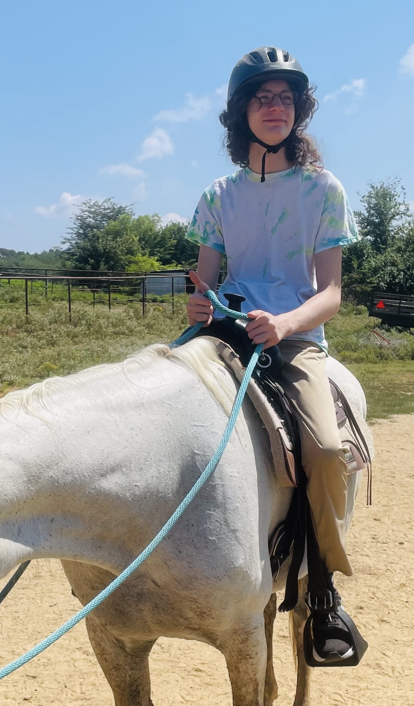
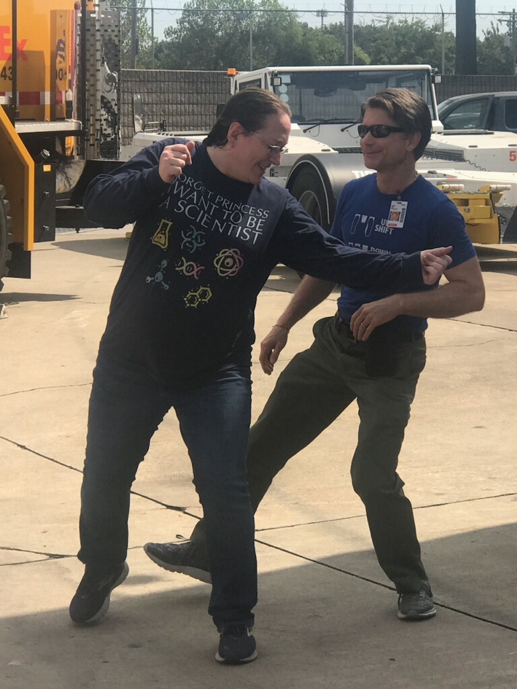
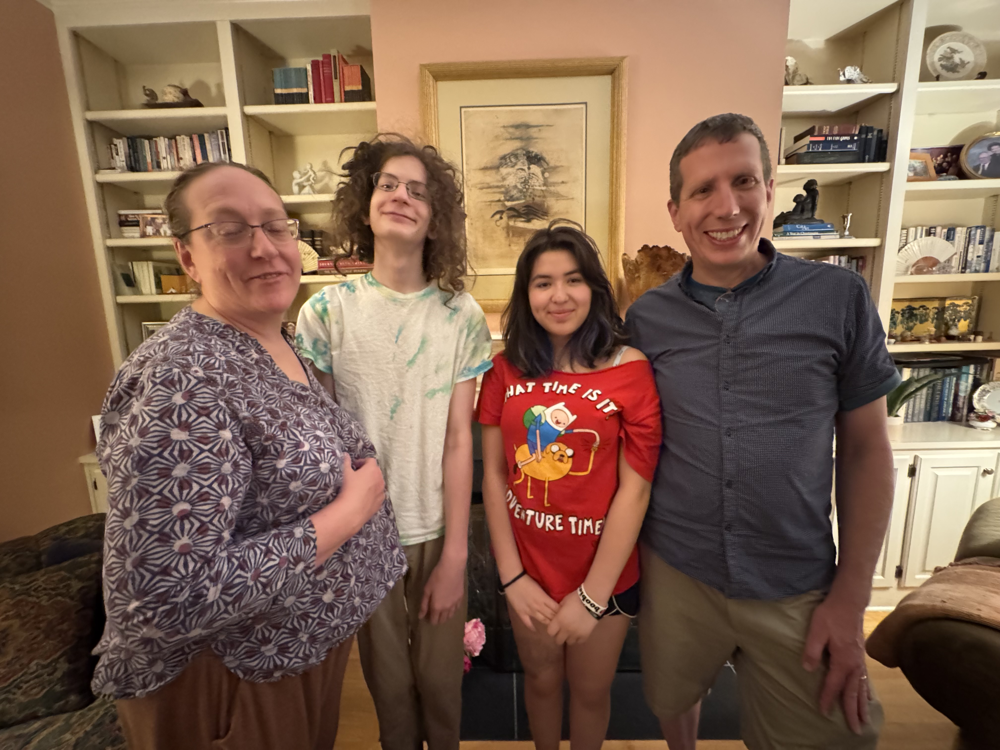
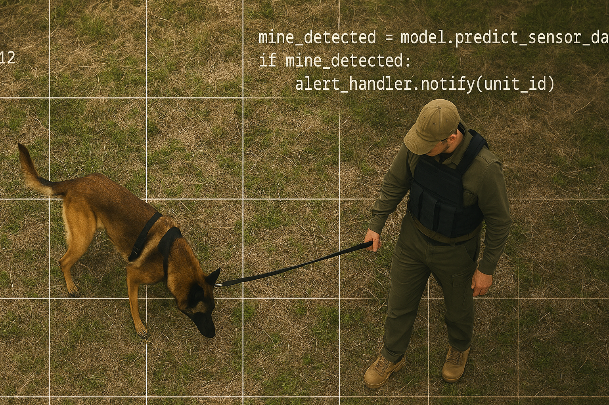

Home
My Hobbies
My Favorite Eats
Gallery
Contact Me
Gallery - Images about Meghan C.
Three key words about Meghan are: ecologist, dancing, and languages - world and coding.
  
Audio
Images to represent brainstorming for Meghan's next step
 hon_StJude.png" width="300" height="200" alt="Information banner about St. Jude 2025 Biohackathon from 9/29-10/1">